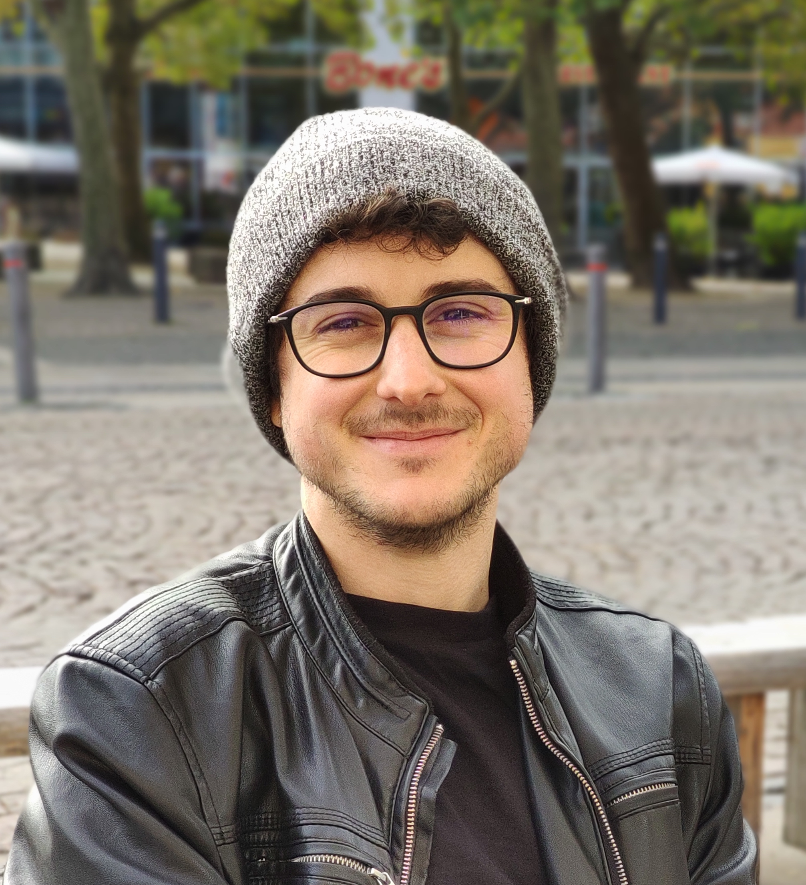

About

I am currently a PhD student at the Technical University of Denmark under the supervision of associate professor Henrik Nielsen and professor Ole Winther. I got my M.Sc. from the University of Copenhagen supervised by professor Anders Krogh. I am interested in Protein Function Prediction, Deep Learning and Sequence Modelling. My main research topic has focused on predicting the function and properties of proteins using deep learning.
Publications
{% for publication in site.posts %}
{% if publication.type == "paper" %}
{% if publication.image %}

{% else %}

{% endif %}
{{ publication.title }}
{{ publication.author }}
{{ publication.journal }}, {{ publication.year }}
{% if publication.pdf %}
PDF
{% endif %}
{% if publication.link %}
Abstract
{% endif %}
{% if publication.bibtex %}
Bibtex
{% endif %}
{% if publication.code %}
Code
{% endif %}
{% if publication.website %}
Website
{% endif %}
{% if publication.blog %}
Blog
{% endif %}
Teaching
Below you can find a list over courses I have taught in.

Deep learning
Technical University of Denmark
Final projects supervision and course evaluation
Fall - 2017, 2018 and 2019
Code
Website
Supervising
As a part of my student lab with Alexander Ronsenberg Johansen we supervise graduate students at the Technical University of Denmark.
We supervise special courses (5-10 ECTS) and Master Thesis' (+30 ECTS).
If you are interested in joining our lab please write me an email with you resume and detail your background in machine learning.
We meet every Tuesday at 09:00 for football and 10:30-12:00 for the weekly research meeting.
Below are listed titles of the M.Sc. Thesis' (+30 ECTS) I have co-supervised.
Community
To build a strong deep learning community in Denmark I help to organize events for students with machine learning researchers and interested companies.
So far this has led to 7 events with +1.5k student participants and sponsors such as Nordea, KPMG, Novozymes, Oticon, and Novo Nordisk.